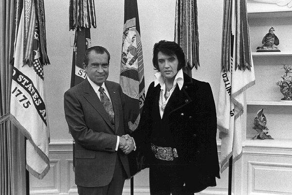

Nixon meets Elvis
rotten.com

|
On 21 December 1970, Elvis Presley paid a visit to President Richard M Nixon
at the White House in Washington, D.C. The meeting was initiated by Presley,
who wrote Nixon a six-page letter requesting a visit with the President and
suggesting that he be made a "Federal Agent-at-Large" in the Bureau of Narcotics
and Dangerous Drugs. During this meeting at the Oval Office, Presley presented
Nixon with a Colt 45 pistol, and this famous photo was taken.
|


|